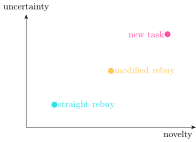

Definition
Not every purchase needs all six phases. The Buygrid model identifies three buying classes characterized by novelty and uncertainty/risk:
| Class | Situation | Uncertainty | Solving |
|---|---|---|---|
| New task | new need, new product, new | high | extensive |
| supplier, little experience | |||
| Modified rebuy | product in use to replace (same | medium | limited |
| supplier new item or new supplier) | |||
| Straight rebuy | simple reorder of known item from | low | routine |
| known supplier, consumables |
- Straight rebuy: repetitive; terms renegotiated periodically (framework agreements, convenzioni); often ordered directly by the requester without the purchasing department.
- Modified rebuy: dissatisfaction with the current supplier or better alternatives; new information needed.
- New task: search for maximum information; careful specification.
Model
Eight phases:
- anticipation and recognition of the problem;
- determination of the characteristics needed;
- description of characteristics and quantity;
- search for and qualification of potential suppliers;
- acquisition and analysis of proposals;
- evaluation of proposals and supplier selection;
- selection of an order routine;
- performance feedback and evaluation.
| Phase | New task | Modified rebuy | Straight rebuy |
|---|---|---|---|
| 1 | yes | maybe | emphasis |
| 2–3 | emphasis | maybe | no |
| 4–5 | yes | maybe | no |
| 6 | yes | emphasis | no |
| 7 | yes | maybe | emphasis (ROP) |
| 8 | yes | yes | yes |
The most complex situations (early phases of new tasks, top-left of the grid) involve the most decision makers. Straight rebuys can use reorder-point routines. Mapping onto the six-phase process: need identification and definition → specification; supplier identification and information gathering → selection; order routine → order and delivery; evaluation → follow-up.
Example
| Item | Class |
|---|---|
| printer paper from the usual supplier | straight rebuy |
| switching to a cheaper bearing vendor | modified rebuy |
| first robotic welding cell | new task |
Pitfall
Novelty concerns the buyer's experience, not the product's age on the market. A modified rebuy can require all eight phases.
Recall
Define the three classes with novelty and uncertainty; list the eight phases; say where each class puts its emphasis.
Picture

More novelty and uncertainty mean more phases, information and decision makers.